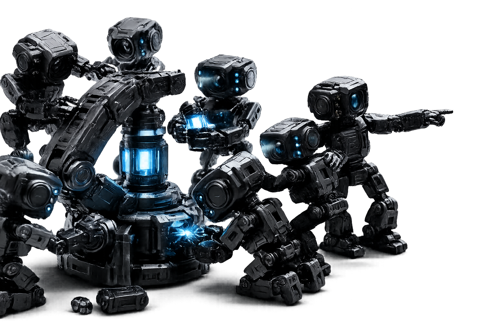
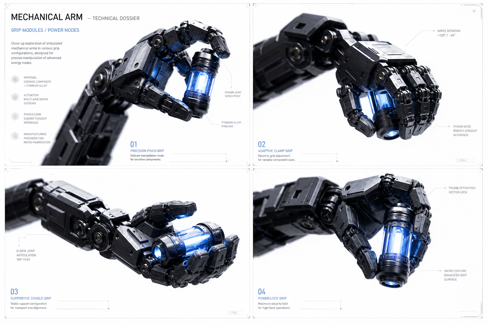
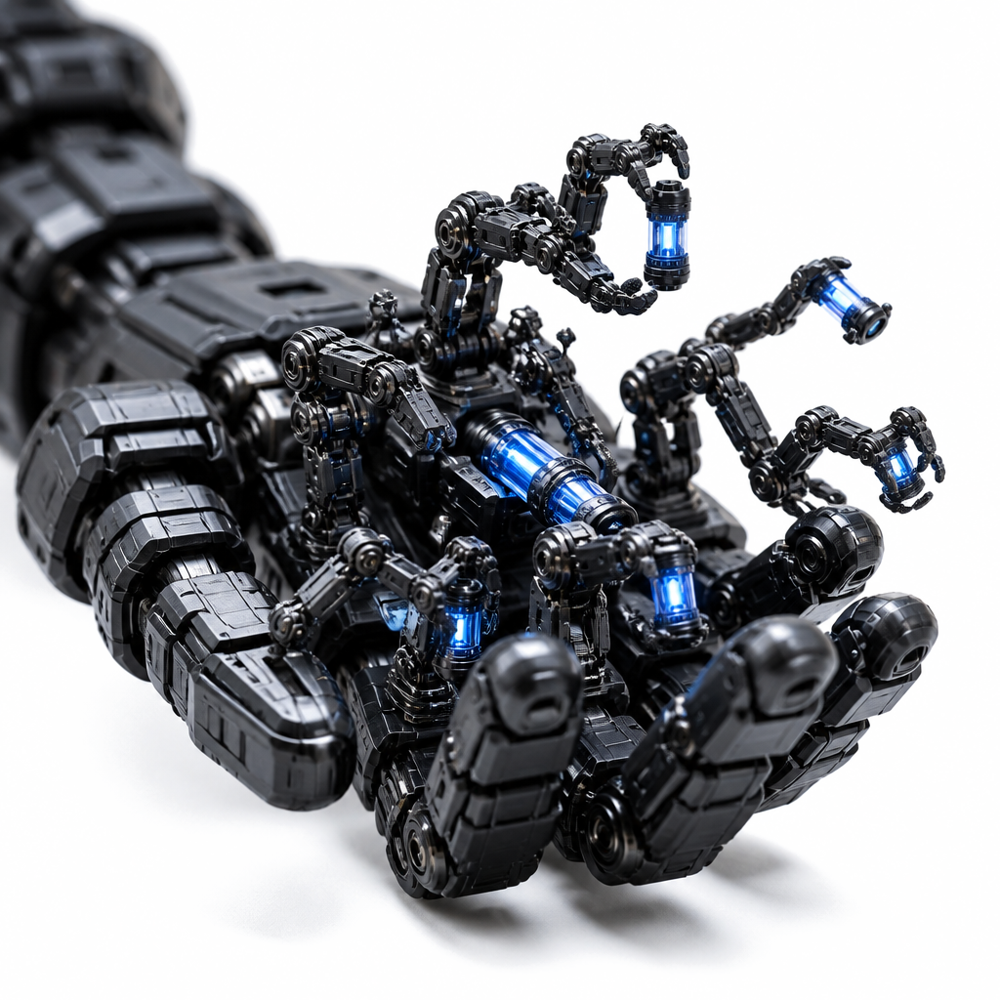

When you're deep in AI lectures, preprints, and repo dives, generic summarizers spit out three bland bullet points and strip every equation, citation, and timestamp. Tab Harvest connects over read-only Chromium CDP, extracts full timestamped transcripts with yt-dlp, and compiles an offline semantic knowledge graph.

When you research frontier AI, the breakthrough is in the exact mathematical formulation, the speaker's offhand qualification, and the code repositories in the video description. Generic summarizers erase everything that makes the research valuable.
vllm-project/vllm and triton-lang/triton from description.
Every run generates self-contained files that live on your local disk. Click the tabs below to explore the interactive knowledge graph, timestamped markdown dossier, raw JSON payload, and CLI runner.
# Tab harvest - 2026-09-05 18:42
- Tabs seen: 42 (extracted: 42, skipped/errored: 0)
- Tabs with video: 18; with full transcripts: 18
- Tier-1 links fetched: 34 (papers: 22, repositories: 12)
---
## [TAB 01] Andrej Karpathy: State of AI 2024 & Build GPT from Scratch
- url: https://www.youtube.com/watch?v=kCc8FmEb1nY
- author: Andrej Karpathy | length: 1:04:15 | views: 2,410,950
- description:
Full step-by-step walkthrough of neural language models, self-attention,
KV-cache precomputation, and GPU training dynamics.
Citations:
- ArXiv 1706.03762: Attention Is All You Need
- https://github.com/karpathy/nanoGPT
- TRANSCRIPT (verified via yt-dlp-json3-manual):
[14:22] The primary innovation in the attention block is allowing every token
to dynamically route context from all prior positions without fixed recurrence.
Unlike RNNs where the hidden state is a lossy bottleneck, self-attention maintains
direct pairwise dot-product comparisons across the entire context window.
[28:45] When you implement the query and key projections, notice that the memory
footprint scales quadratically with sequence length T. FlashAttention solves this
not by reducing mathematical FLOPs, but by fusing SRAM operations and computing
the softmax reduction incrementally.
---
## [TAB 04] Umar Jamil: Llama 3 Explained & Coded from Scratch in PyTorch
- url: https://www.youtube.com/watch?v=7xTGNNLPyMI
- author: Umar Jamil | length: 1:12:04
- TRANSCRIPT:
[28:45] If you don't precompute the cos and sin frequencies for RoPE, your attention
layer forward pass is 40% slower than it needs to be. We rotate the 2D chunks of
query and key vectors directly inside the GPU registers before the dot product.
---
## [TAB 08] ArXiv 2205.14135: FlashAttention Fast and Memory-Efficient Exact Attention
- url: https://arxiv.org/abs/2205.14135
- authors: Tri Dao, Daniel Y. Fu, Stefano Ermon, Atri Rudra, Christopher Ré
- summary:
Transformers are slow and memory-hungry on long sequences because self-attention
scales quadratically. FlashAttention computes exact attention with IO-awareness,
tiling the matrix multiplication across GPU SRAM blocks for 2-4x wall-clock speedups.{
"started": "2026-09-05T18:42:10Z",
"port": 9222,
"stats": {
"tabs_seen": 42,
"tabs_extracted": 42,
"video_transcripts": 18,
"tier1_links_fetched": 34
},
"tabs": [
{
"index": 1,
"url": "https://www.youtube.com/watch?v=kCc8FmEb1nY",
"title": "Andrej Karpathy: State of AI 2024",
"video": {
"videoId": "kCc8FmEb1nY",
"author": "Andrej Karpathy",
"duration": "1:04:15",
"transcript_engine": "yt-dlp-primary",
"key_timestamps": [
{ "ts": "14:22", "topic": "Dynamic attention context routing" },
{ "ts": "28:45", "topic": "FlashAttention SRAM tiling explanation" }
],
"outbound_citations": [
"https://arxiv.org/abs/1706.03762",
"https://github.com/karpathy/nanoGPT"
]
}
},
{
"index": 2,
"url": "https://www.youtube.com/watch?v=eMlx5fFNoYc",
"title": "Attention in transformers, visually explained | 3Blue1Brown",
"video": {
"videoId": "eMlx5fFNoYc",
"author": "Grant Sanderson",
"duration": "26:48",
"transcript_engine": "yt-dlp-primary",
"key_timestamps": [
{ "ts": "08:14", "topic": "Query and Key dot-product geometric matchmaking" }
]
}
}
]
}# 1. Start your browser with Chromium debugging enabled (one-time command)
/Applications/Google\ Chrome.app/Contents/MacOS/Google\ Chrome --remote-debugging-port=9222 &
# 2. Run Tab Harvest (attaches 100% read-only, pulls transcripts, compiles graph)
python3 scripts/harvest.py --port 9222 --out ~/harvests/manual
# Execution Output:
[+] Connected to Chromium CDP at 127.0.0.1:9222
[+] Discovered 42 active tabs across 2 browser windows
[+] Processing Tier 0 (Tab dumps & video transcripts)...
[Tab 1/42] Karpathy: State of AI -> yt-dlp transcript extracted (1,420 words)
[Tab 2/42] 3Blue1Brown: Attention -> yt-dlp transcript extracted (890 words)
[Tab 3/42] ArXiv 2205.14135 (FlashAttention) -> PDF text parsed (14 pages)
[+] Scoring Tier 1 outbound citations (watch/status links weighted 12/10)...
[Tier-1] Fetched 34 linked preprints and GitHub repositories
[+] Building graph.json and self-contained graph.html...
[✓] Complete in 2.41 seconds. Deliverables written to:
~/harvests/manual/graph.html
~/harvests/manual/harvest.md
~/harvests/manual/harvest.jsonWatch Tab Harvest attach to 42 active research tabs in Chromium, extract in-page transcripts via yt-dlp, and compile the interactive offline graph in 2.4 seconds.
Deploy the open-source CLI script or upgrade to continuous cross-session memory synthesis for your research lab.
The standalone, 100% read-only CLI harvester for everyday research workflows.
Never closes, navigates, or reloads your active browser tabs.
Pulls full timestamped transcripts, chapters, and descriptions.
Crawls outbound GitHub repositories and ArXiv citations.
Offline interactive canvas that works with zero cloud dependencies.
Continuous cross-session memory synthesis for high-volume researchers and autonomous agent teams.
Merges research tabs across days, surfacing recurring breakthroughs.
Compiles structured Markdown notes with YAML frontmatter and bi-directional links.
Recursively resolves paper footnotes into verified research citations.
Full hands-free execution protocol for Claude Code and Hermes Agent.
Architecture dossiers and precision mechanical joints designed to harvest chaotic browser states without crashing.

